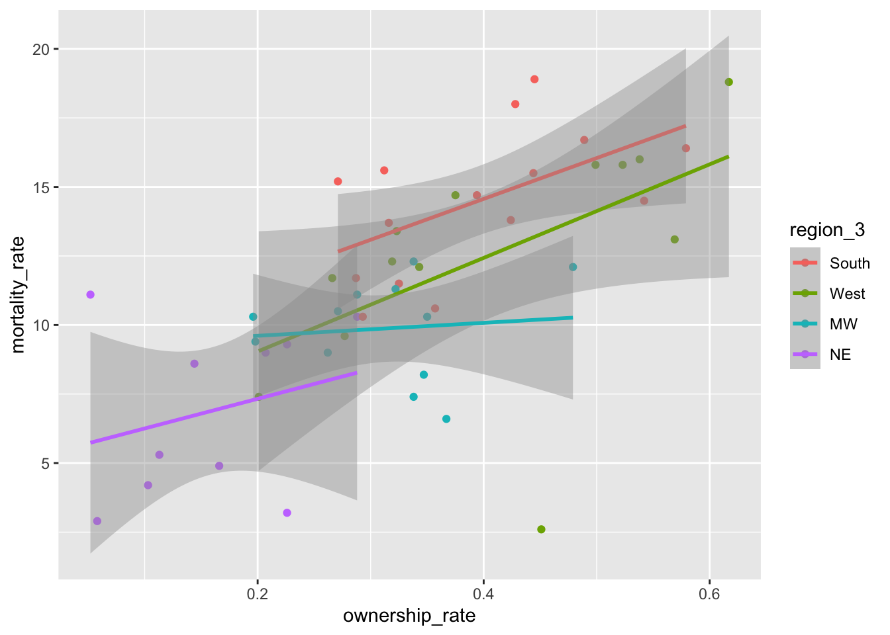
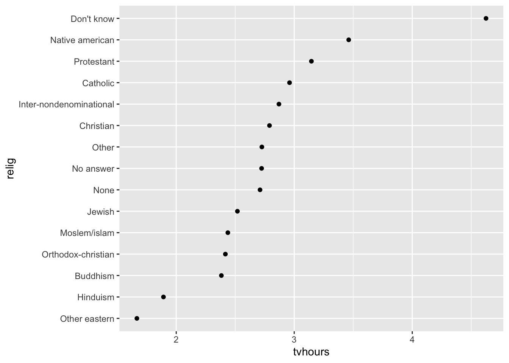

Chapter 8 Factors with forcats
Goals:
- Use the
forcatspackage to change the levels of factors, or to re-order levels of factors in a way that makes tables and graphs easier to read.
8.1 Change Factor Levels
The Data: The pokemon_allgen.csv data set contains observations on Pokemon from the first 6 Generations (the first 6 games). There are 20 variable in this data set, but, of particular interest for this chapter are
Type 1, the first Type characteristic of the Pokemon (a factor with 13 levels)Type 2, the second Type characteristic of the Pokemon (a factor with 13 levels,NAif the Pokemon only has one type)Generation, the generation the Pokemon first appeared in (a factor with 6 levels)
Read in the data set with read_csv(). Then, use a mutate() statement to make a Generation_cat variable that is a factor.
library(tidyverse)
pokemon_df <- read_csv("data/pokemon_allgen.csv") %>%
mutate(Generation_cat = factor(Generation))One easy way to get a quick summary of a factor variable is to use group_by() and n() within a summarise() statement:
pokemon_df %>% group_by(`Type 1`) %>%
summarise(counttype = n())## # A tibble: 18 x 2
## `Type 1` counttype
## * <chr> <int>
## 1 Bug 75
## 2 Dark 31
## 3 Dragon 41
## 4 Electric 90
## 5 Fairy 18
## 6 Fighting 27
## 7 Fire 56
## 8 Flying 6
## 9 Ghost 58
## 10 Grass 73
## 11 Ground 42
## 12 Ice 24
## 13 Normal 108
## 14 Poison 30
## 15 Psychic 73
## 16 Rock 47
## 17 Steel 29
## 18 Water 1198.1.1 fct_recode() to Rename Levels
Now, let’s make a bar plot that examines how many Legendary Pokemon first appear in each generation, using dplyr commands that we’ve used and a simple geom_col():
pokemon_legend <- pokemon_df %>% filter(Legendary == TRUE) %>%
group_by(Generation_cat) %>%
summarise(nlegend = n())
ggplot(data = pokemon_legend, aes(x = Generation_cat, y = nlegend)) +
geom_col()We’ve discussed how to change many aspects of ggplot2 graphs, but we haven’t discussed how to rename the labels of levels of a categorical variable, whether those appear in the x-axis or in a separate legend. The easiest way to do this is to rename the levels in the factor itself using fct_recode(). Suppose, for example, that we want to relabel the Generation number with the actual region corresponding to each game (Kanto, Johto, Hoenn, Sinnoh, Unova, and Kalos). The function fct_recode() takes the name of a factor already present in the data set as its first argument and then a series of renaming schemes (new_name = “old_name”) as its remaining arguments.
pokemon_legend <- pokemon_legend %>%
mutate(Generation_cat2 = fct_recode(Generation_cat, Kanto = "1",
Johto = "2", Hoenn = "3",
Sinnoh = "4", Unova = "5",
Kalos = "6")) %>%
select(Generation_cat2, everything())
head(pokemon_legend)## # A tibble: 6 x 3
## Generation_cat2 Generation_cat nlegend
## <fct> <fct> <int>
## 1 Kanto 1 6
## 2 Johto 2 5
## 3 Hoenn 3 34
## 4 Sinnoh 4 17
## 5 Unova 5 27
## 6 Kalos 6 13ggplot(data = pokemon_legend,
aes(x = Generation_cat2, y = nlegend)) +
geom_col()8.1.2 Collapsing Many Levels Into Fewer Levels with fct_collapse()
Sometimes, you might want to collapse the levels of two or more factors into a single level. With the Pokemon data set, there isn’t an example where this really makes sense, but, in the exercises, you’ll see a good use for this function with the social survey data set. For practice, we can collapse the Ice and Dark type Pokemon into a new level called Coolest and we can collapse the Poison, Fighting, and Fire type Pokemon into a new level called Least_Cool.
pokemon_long <- pokemon_df %>% pivot_longer(c(`Type 1`, `Type 2`),
names_to = "Number",
values_to = "Type")
pokemon_long %>%
mutate(new_type = fct_collapse(Type, Coolest = c("Ice", "Dark"),
Least_Cool = c("Fire", "Fighting", "Poison"))) %>%
select(new_type, Type, everything())## # A tibble: 1,894 x 22
## new_type Type `#` Name Total HP Attack Defense `Sp. Atk` `Sp. Def`
## <fct> <chr> <dbl> <chr> <dbl> <dbl> <dbl> <dbl> <dbl> <dbl>
## 1 Grass Grass 1 Bulbas… 318 45 49 49 65 65
## 2 Least_Co… Poison 1 Bulbas… 318 45 49 49 65 65
## 3 Grass Grass 2 Ivysaur 405 60 62 63 80 80
## 4 Least_Co… Poison 2 Ivysaur 405 60 62 63 80 80
## 5 Grass Grass 3 Venusa… 525 80 82 83 100 100
## 6 Least_Co… Poison 3 Venusa… 525 80 82 83 100 100
## 7 Grass Grass 3 Venusa… 525 80 82 83 100 100
## 8 Least_Co… Poison 3 Venusa… 525 80 82 83 100 100
## 9 Least_Co… Fire 4 Charma… 309 39 52 43 60 50
## 10 <NA> <NA> 4 Charma… 309 39 52 43 60 50
## # … with 1,884 more rows, and 12 more variables: Speed <dbl>, Generation <dbl>,
## # Legendary <lgl>, id <chr>, identifier <chr>, height <dbl>, weight <dbl>,
## # base_experience <dbl>, order <dbl>, is_default <dbl>, Generation_cat <fct>,
## # Number <chr>What happens to the levels that aren’t being re-specified?
8.1.3 Exercises
Exercises marked with an * indicate that the exercise has a solution at the end of the chapter at 8.4.
What
dplyrfunction(s) could you also use to create the new levels that were created withfct_collapse()? Why might it be a little easier to usefct_collapse()?* We did not properly explore the data set before making the graphs above, and, in fact, there is some double counting of Pokemon in this data set (this is another example where being familiar with the data set you’re working with is advantageous: people familiar with Pokemon know that there are fewer than 947 Pokemon in Generations 1 through 6).
Figure out why some Pokemon are double counted. Then, create a new data set that only keeps one observation per Pokemon #.
- Create the bar plot with your non-duplicated data set. Are your results significantly changed?
8.2 Reorder Factor Levels
8.2.1 Change the Order of Levels by a Quantitative Variable with fct_reorder()
You might also be interested in re-ordering the x or y-axis of a particular graph so that the order of the factors correspond to, for example, the median of a quantitative variable for each level. The reason you would want to do this is easiest to see with an example. For example, suppose you want to look at the most common Pokemon types across the first 6 generations. We use the non-duplicated data set from the previous section’s exercises, we pivot the data so that type is in one column, and we remove observations with missing Type, which correspond to the second Type of Pokemon that only have a single Type:
pokemon_nodup <- pokemon_df %>% group_by(`#`) %>% slice(1) %>%
ungroup()
pokemon_long <- pokemon_nodup %>%
pivot_longer(c(`Type 1`, `Type 2`),
names_to = "Number",
values_to = "Type")
pokemon_sum <- pokemon_long %>%
group_by(Type) %>%
summarise(count_type = n()) %>%
filter(!is.na(Type))
ggplot(data = pokemon_sum, aes(x = Type,
y = count_type)) +
geom_col() +
coord_flip() ## flips the x and y axesHow does R order the levels of the Type factor, by default? How might you like them to be ordered to make the graph more readable?
The following code creates a new factor variable called Type_ordered that orders type by the count_type variable. fct_reorder() takes a factor as its first argument and a numeric variable to re-order that factor by as its second argument. The bar plot is then reconstructed with this new variable.
pokemon_sum <- pokemon_sum %>%
mutate(Type_ordered = fct_reorder(.f = Type, .x = count_type))
ggplot(data = pokemon_sum, aes(x = Type_ordered,
y = count_type)) +
geom_col() +
coord_flip()fct_reorder() also works with boxplots or simple point plots that show, for example, the median response for each level of a factor. The following set of plots investigate how the Defense stat changes for different Pokemon types
pokemon_long <- pokemon_long %>%
filter(!is.na(Type)) %>%
mutate(Type_Deford = fct_reorder(.f = Type, .x = Defense,
.fun = median))
ggplot(data = pokemon_long, aes(x = Type_Deford,
y = Defense)) +
geom_boxplot() +
coord_flip()The following code makes a point plot that shows the median defense for each type instead of boxplots.
pokemon_med <- pokemon_long %>% group_by(Type_Deford) %>%
summarise(med_def = median(Defense)) %>%
mutate(Type_Deford = fct_reorder(.f = Type_Deford, .x = med_def,
.fun = median))
ggplot(data = pokemon_med, aes(x = med_def, y = Type_Deford)) +
geom_point()Do you have a preference between the boxplot graph and the point plot?
New Data. The gun_violence_us.csv data set was obtained from https://www.openintro.org/book/statdata/index.php?data=gun_violence_us and contains the following variables on gun violence in 2014:
state, the name of the U.S. statemortality_rate, number of deaths from gun violence per 100,000 peopleownership_rate, the proportion of adults who own a gunregion, region of the U.S. (South,West,NE, andMW)
mortality_df <- read_csv("data/gun_violence_us.csv") %>%
mutate(region = factor(region))8.2.2 Re-Leveling By Two Quantitative Variables with fct_reorder2()
Suppose that we want to investigate the relationship between mortality_rate and ownership_rate using this data set. Run the following code to create a scatterplot of mortality_rate vs. ownership_rate with fitted linear regression lines for each region of the United States:
ggplot(data = mortality_df,
aes(x = ownership_rate, y = mortality_rate, colour = region)) +
geom_point() +
geom_smooth(method = "lm")
Notice the order of the levels in the legend. Most people would prefer the order to actually match up with where the lines in the plot end, not for the order to be alphabetical. To achieve this, we can use fct_reorder2() to change the order of the factor levels:
mortality_df <- mortality_df %>%
mutate(region_2 = fct_reorder2(region,
.x = ownership_rate,
.y = mortality_rate))
ggplot(data = mortality_df,
aes(x = ownership_rate, y = mortality_rate, colour = region_2)) +
geom_point() +
geom_smooth(method = "lm")
Did it change the order of the levels how you would expect? fct_reorder2() actually looks at points, not lines, when determining the ordering. If you want the levels to match up exactly, then we’ll have to reorder the levels manually with fct_relevel():
8.2.3 Reordering Levels Manually with fct_relevel()
Factors are ordered alphabetically by default. If we want precise control over the order of the levels of a factor, we can use fct_relevel(), which takes a factor and a vector of the new levels as inputs:
mortality_df <- mortality_df %>%
mutate(region_3 = fct_relevel(region, c("South", "West", "MW", "NE")))
ggplot(data = mortality_df,
aes(x = ownership_rate, y = mortality_rate, colour = region_3)) +
geom_point() +
geom_smooth(method = "lm")Reordering the levels of a factor manually might also be useful in fitting linear models. Recall that, by default, R makes the reference group in a linear model the first level alphabetically. If you’d like a different reference group, you can reorder the levels of the factor:
mod <- lm(mortality_rate ~ ownership_rate + region, data = mortality_df)
mod2 <- lm(mortality_rate ~ ownership_rate + region_2, data = mortality_df)
mod3 <- lm(mortality_rate ~ ownership_rate + region_3, data = mortality_df)
summary(mod)
summary(mod2)
summary(mod3)8.2.4 Exercises
- Make the side-by-side boxplots again with the pokemon data but do not use
ungroup()by running the following code.
pokemon_nodup <- pokemon_df %>% group_by(`#`) %>% slice(1) ## %>%
## ungroup()
pokemon_long <- pokemon_nodup %>%
pivot_longer(c(`Type 1`, `Type 2`),
names_to = "Number",
values_to = "Type")
pokemon_long <- pokemon_long %>%
filter(!is.na(Type)) %>%
mutate(Type_Deford = fct_reorder(.f = Type, .x = Defense,
.fun = median))
ggplot(data = pokemon_long, aes(x = Type_Deford,
y = Defense)) +
geom_boxplot() +
coord_flip()
Why aren’t the types ordered by median defense anymore?
- The
.funargument infct_reorder()controls how theTypefactor is ordered. Change this to specify ordering by themean,max, andmin. What ordering makes the most sense? Why?
8.3 Chapter Exercises
Exercises marked with an * indicate that the exercise has a solution at the end of the chapter at 8.4.
We will use the general social survey data set, which is in the forcats library in R. You should some of this Wikipedia page to better understand where this data comes from Wikipedia.
Most variables are self-explanatory, but a couple that aren’t are:
partyid, political leaning anddenom, religious denomination (if unfamiliar with this, you can think of it as a “more specific” subset of a particular relgion).
Note that some of these exercises are from the R for Data Science textbook.
Load in the data set with
library(tidyverse)
gss_cat- * Using a
forcatsfunction, change the name of the levelNot str republicanto beWeak republicanand change the name of the levelNot str democratto beWeak democrat. These names more closely match the levelsStrong republicanandStrong democrat. Then, create a table of counts that shows the number of respondents in each political partypartyid.
Note: Levels that aren’t specified in your forcats function do not change.
Note 2: In naming something Weak republican, you’ll need to use backticks since there is a space in the level name.
* Use a
forcatsfunction so thatpartyidjust has 4 categories: Other (corresponding to No answer, Don’t know, Other party), Ind (corresponding to Ind,near rep, Independent, Ind, near dem), Rep (corresponding to Strong republican and Not str republican), and Dem (corresponding to Not str democrat and Strong democrat).* Run the code to create the following plot that shows the average number of hours of television people watch from various religions.
relig_summary <- gss_cat %>%
group_by(relig) %>%
summarise(
age = mean(age, na.rm = TRUE),
tvhours = mean(tvhours, na.rm = TRUE),
n = n()
)
ggplot(data = relig_summary, aes(tvhours, relig)) +
geom_point()Then, use a forcats function create a new variable in the data set that reorders the religion factor levels and remake the barplot so that the religion watches the most television, on average, is on the top, and the religion that watches the least television, on average, is on the bottom.
- * Run the code to make the following line plot that shows age on the x-axis, the proportion on the y-axis, and is coloured by various marital statuses (married, divorced, widowed, etc.):
by_age <- gss_cat %>%
filter(!is.na(age)) %>%
count(age, marital) %>%
group_by(age) %>%
mutate(prop = n / sum(n))
ggplot(by_age, aes(age, prop,
colour = marital)) +
geom_line(na.rm = TRUE) +
labs(colour = "marital")Then, use a forcats function to make the plot so that the legend labels line up better with the different coloured marital status lines (e.g. so that the label for widowed is the first that appears in the legend, the label for married is second, etc.).
- We haven’t talked much about creating two-way tables (or contingency tables). These are generally quite difficult to make with the
tidyversefunctions, but you can use the baseRtable()andprop.table()functions to make these.
Using data only from the year 2014, run the following code to make 4 two-way tables with the party_small variable that was constructed earlier and race:
gss_cat <- gss_cat %>% mutate(party_small = fct_collapse(partyid,
Other = c("No answer", "Don't know", "Other party"),
Ind = c("Ind,near rep", "Independent", "Ind,near dem"),
Rep = c("Strong republican", "Not str republican"),
Dem = c("Not str democrat", "Strong democrat")))
gss_recent <- gss_cat %>% filter(year != 2014)
tab1 <- table(gss_recent$party_small, gss_recent$race)
tab1##
## Other Black White Not applicable
## Other 39 46 375 0
## Rep 215 127 4467 0
## Ind 863 827 5631 0
## Dem 580 1743 4032 0prop.table(tab1)##
## Other Black White Not applicable
## Other 0.002058591 0.002428081 0.019794141 0.000000000
## Rep 0.011348641 0.006703616 0.235787807 0.000000000
## Ind 0.045552916 0.043652679 0.297228820 0.000000000
## Dem 0.030614938 0.092003167 0.212826603 0.000000000prop.table(tab1, margin = 1)##
## Other Black White Not applicable
## Other 0.08478261 0.10000000 0.81521739 0.00000000
## Rep 0.04470784 0.02640882 0.92888334 0.00000000
## Ind 0.11788007 0.11296271 0.76915722 0.00000000
## Dem 0.09126672 0.27427223 0.63446105 0.00000000prop.table(tab1, margin = 2)##
## Other Black White Not applicable
## Other 0.02298173 0.01676996 0.02585315
## Rep 0.12669417 0.04629967 0.30796277
## Ind 0.50854449 0.30149471 0.38821096
## Dem 0.34177961 0.63543565 0.27797311Use the help on ?prop.table to figure out how each of these three tables are constructed.
Which table do you think is most informative? What conclusions does it help you to draw?
8.4 Exercise Solutions
8.4.1 Change Factor Levels S
- * We did not properly explore the data set before making the graphs above, and, in fact, there is some double counting of Pokemon in this data set (this is another example where being familiar with the data set you’re working with is advantageous: people familiar with Pokemon know that there are fewer than 947 Pokemon in Generations 1 through 6).
Figure out why some Pokemon are double counted. Then, create a new data set that only keeps one observation per Pokemon #.
pokemon_nodup <- pokemon_df %>% group_by(`#`) %>% slice(1) %>%
ungroup()8.4.2 Reorder Factor Levels S
8.4.3 Chapter Exercises S
- * Using a
forcatsfunction, change the name of the levelNot str republicanto beWeak republicanand change the name of the levelNot str democratto beWeak democrat. These names more closely match the levelsStrong republicanandStrong democrat. Then, create a table of counts that shows the number of respondents in each political partypartyid.
Note: Levels that aren’t specified in your forcats function do not change.
Note 2: In naming something Weak republican, you’ll need to use backticks since there is a space in the level name.
gss_cat %>%
mutate(partyid_new = fct_recode(partyid,
`Weak republican` = "Not str republican",
`Weak democrat` = "Not str democrat")) %>% group_by(partyid_new) %>%
summarise(ncount = n())- * Use a
forcatsfunction so thatpartyidjust has 4 categories: Other (corresponding to No answer, Don’t know, Other party), Ind (corresponding to Ind,near rep, Independent, Ind, near dem), Rep (corresponding to Strong republican and Not str republican), and Dem (corresponding to Not str democrat and Strong democrat).
gss_cat <- gss_cat %>% mutate(party_small = fct_collapse(partyid,
Other = c("No answer", "Don't know", "Other party"),
Ind = c("Ind,near rep", "Independent", "Ind,near dem"),
Rep = c("Strong republican", "Not str republican"),
Dem = c("Not str democrat", "Strong democrat")))- * Run the code to create the following plot that shows the average number of hours of television people watch from various religions.
relig_summary <- gss_cat %>%
group_by(relig) %>%
summarise(
age = mean(age, na.rm = TRUE),
tvhours = mean(tvhours, na.rm = TRUE),
n = n()
)
ggplot(data = relig_summary, aes(tvhours, relig)) +
geom_point()Then, use a forcats function create a new variable in the data set that reorders the religion factor levels and remake the barplot so that the religion watches the most television, on average, is on the top, and the religion that watches the least television, on average, is on the bottom.
relig_summary <- relig_summary %>%
mutate(relig = fct_reorder(relig, tvhours))
ggplot(data = relig_summary, aes(tvhours, relig)) +
geom_point()
- * Run the code to make the following line plot that shows age on the x-axis, the proportion on the y-axis, and is coloured by various marital statuses (married, divorced, widowed, etc.):
by_age <- gss_cat %>%
filter(!is.na(age)) %>%
count(age, marital) %>%
group_by(age) %>%
mutate(prop = n / sum(n))
ggplot(by_age, aes(age, prop,
colour = marital)) +
geom_line(na.rm = TRUE) +
labs(colour = "marital")Then, use a forcats function to make the plot so that the legend labels line up better with the different coloured marital status lines (e.g. so that the label for widowed is the first that appears in the legend, the label for married is second, etc.).
by_age2 <- by_age %>% ungroup() %>%
mutate(marital2 = fct_reorder2(marital, .x = age, .y = prop))
ggplot(by_age2, aes(age, prop,
colour = marital2)) +
geom_line(na.rm = TRUE) +
labs(colour = "marital") +
scale_colour_viridis_d()